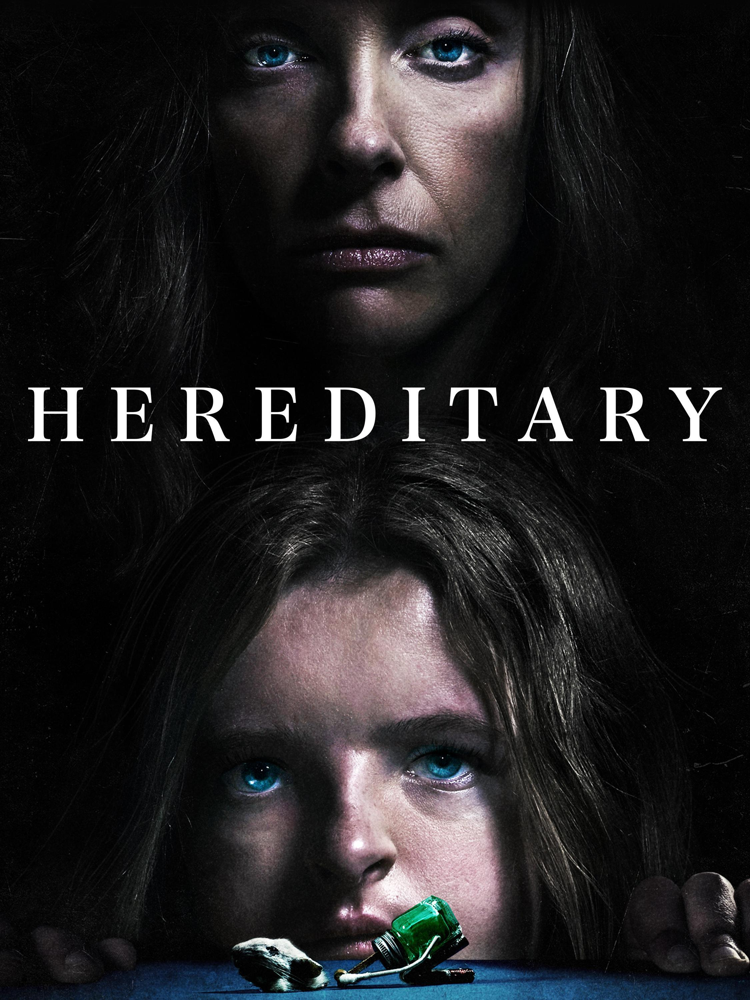

Após a morte da reclusa avó, a família Graham começa a desvendar algumas coisas. Mesmo após a partida da matriarca, ela permanece como se fosse uma sombra sobre a família, especialmente sobre a solitária neta adolescente, Charlie, por quem ela sempre manteve uma fascinação não usual.